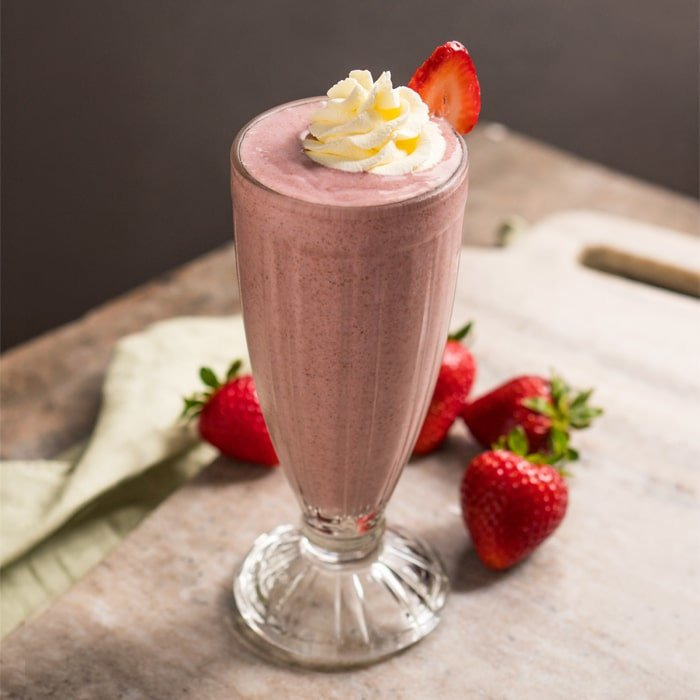

Коктель з полунецею
Необхідні інгрідієнти:
- Молоко, 1 ск.
- Полуниця, 200 г
- Лід (за бажанням)
Як приготувати?
- Візьміть 200г полуниці
- Розмільчіть блендером
- Додайте 1 ск. молока
- Ретельно перемішайте
- Додайте лід за вкусом
Необхідні інгрідієнти:
Як приготувати?